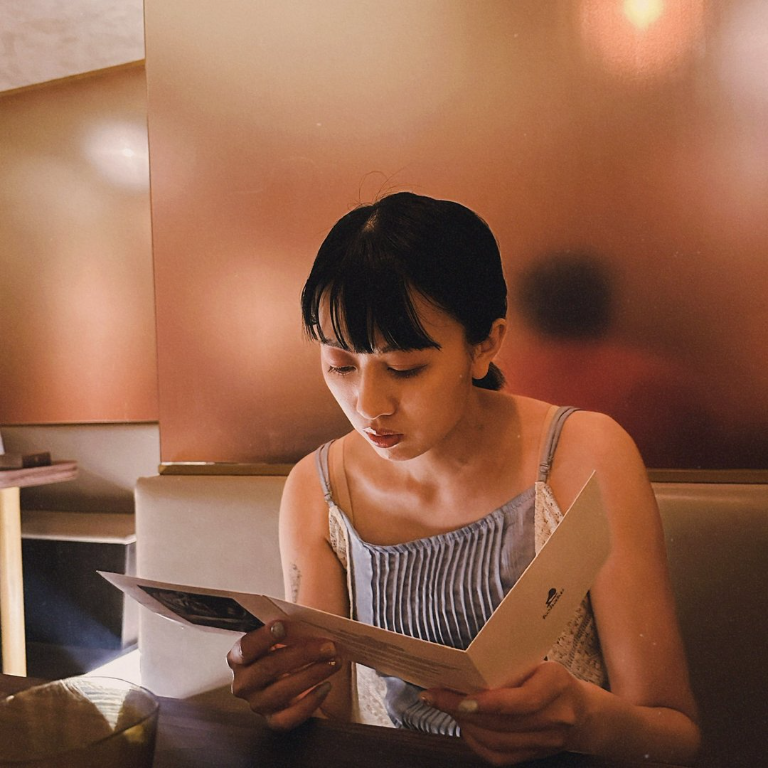

網頁美術設計 Web Designer
揚京快客網路科技公司
規劃與設計網站模組及頁面，運用 HTML／CSS 優化響應式版型，加入互動特效與動畫，並協助客戶進行設計提案、需求溝通與專案協作。
Web DesignHTML / CSSUI Visual
VISUAL DESIGNER / WEB DESIGNER
我是張自華，專注於品牌視覺、網頁美術與數位內容設計。從概念發想到細節落地，讓每一次溝通都成為更好的作品。
探索我的經歷 ↓
臺灣臺中人，1996 年生，畢業於南台科技大學視覺傳達設計系。具備網頁美術、品牌視覺、數位行銷素材與平面設計經驗，熟悉從視覺發想到設計執行、跨部門溝通及專案協作。
對展演與影像文化保持關注，平時透過觀賞電影及瀏覽各類展演累積觀察力，持續拓展設計思維。
揚京快客網路科技公司
規劃與設計網站模組及頁面，運用 HTML／CSS 優化響應式版型，加入互動特效與動畫，並協助客戶進行設計提案、需求溝通與專案協作。
瑞奧股份有限公司
負責課程主視覺、官網、社群平台及數位媒體廣告素材，與行銷部門共同激發創意並完成設計執行。
悠達天下股份公司
規劃品牌行銷活動宣傳物，協調跨部門資源與設計排程，改善作業流程並提升團隊協作效率。
悠達天下股份有限公司
負責課程主視覺、品牌素材與數位廣告，維持品牌視覺一致性並提升活動曝光。
臺灣博通股份有限公司 ・ 格瑞仕股份有限公司
執行品牌識別、社群內容、商品攝影與資料上架，並參與影音素材製作。
EDUCATION
視覺傳達設計系
興趣
電影欣賞
展覽與藝文展演